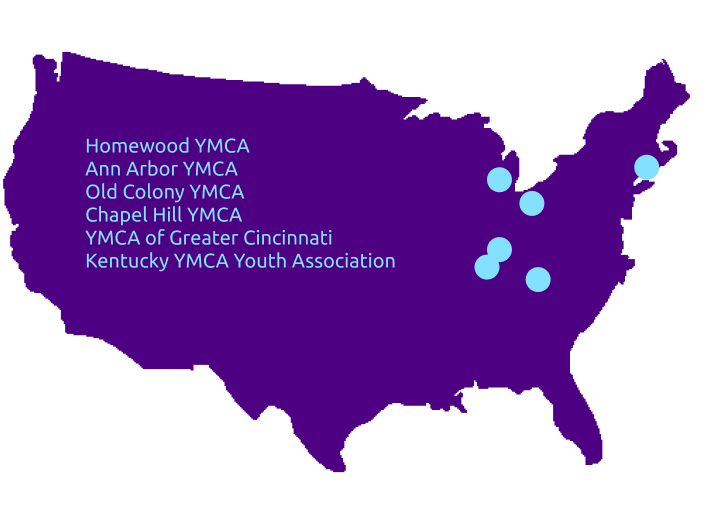

Wave
UI/UX Design / UX Research
In Fall 2021, I led a Design For America project with the national YMCA as a UX designer. Contributed to designing a mobile app that fosters career building for high school youths, aiming to boost youth participation in the community through mentorship.
Methods
Tools
Overview
Final Solution
A mobile platform that facilitates connections between youth and their peers, allowing them to launch or join projects they are interested in with partnerships with organizations, mentors, and professionals while seeing their tangible impact in their community.
Research
Demographics

| Primary Research Interviews |
|---|
|
- Local YMCA staff - Directors of Youth Programming - Youth involved with change-making - National YMCA coordinators |
To better understand the needs of target users (middle and high school students) and the current situation regarding successful youth activities, I conducted interviews with 6 YMCA Directors of Youth Programming across main US branches.
I investigated factors behind youth participation in YMCA branches, conducting interviews with various entities. Utilized insights to develop a more accessible platform for youth engagement in independent projects, seeking audience and partners.
Top Interview Questions
Pre-interview, I scripted questions for YMCA branches on program retention, popular types, and youth motivations, ensuring a comprehensive overview across states.
1. What are the main reasons students leave or discontinue programs?
2. How large is the percentage of students leaving the programs in the middle of the process?
3. How do youth feel about YMCA's recruitment process for new members
4. What activities do students tend to gravitate towards?
5. What are the motivations or goals students have when participating in the programs?
6. What existing change-makers programs are there?
Insights
Main Insights from Interviews
Through varied questioning in multiple interviews, my team unearthed key insights into the challenges and pain points faced by youth in YMCA programs.
1. Working with peers on topics of their interest tends to make youth more engaged and successful. Yet, such opportunities are not accessible.

2. Youth wants to avoid the intervention of adults, yet they lack the resources and information to develop programs on their own.
3. Youth observing tangible impacts and listening to constructive feedback results in better engagement and participation.
Defining Scope
Narrowing the Problem Space
From YMCA staff interviews, we pinpointed specific youth pain points and needs. Key discoveries emerged after filtering, addressing concerns for both youth and YMCA branches.
1. Students are not interested or involved in community activities both inside and outside the Y.
2. Youth are not aware of programs that match their interests.
3. Some programs do not have altruistic purposes since such programs focus more on campaigning the issue rather than resolving the issue practically.
How Can We Questions
Affinity Diagraming
Based on four insights, my team generated "How can we" questions to target specific pain points and needs, focusing on enhancing youth engagement in YMCA and community programs.
1. Help students connect with peers with mutual interests in an accessible way.
2. Provide students with adequate resources and guidance to launch their own projects while minimizing adult intervention.
3. Preserve youth engagement with positive reinforcement by informing the notable impacts of their programs on their community.
Synthesizing 1)
Persona Construction
Synthesizing 2)
Stakeholders Mapping
We opted for a teenage boy persona as the ideal user for our envisioned service. Stakeholders are divided into primary (motivated youth), secondary (program staff), and tertiary (community members and organizations).
Ideation
Top Solutions
Post user research, we chose to build an online mobile SNS platform as the best solution for addressing youth pain points and creating a high-quality design product.
Why this Decision?
Recognizing a gap for student-centric platforms, our proposal involves creating a digital app within YMCA. It facilitates student connections post-COVID and allows targeted advertising for enhanced youth engagement.
Competitor Research:Reference
Before prototyping, our team studied competitors' UIs (Handshake, Facebook, Twitter, Tinder, LinkedIn, Instagram), emphasizing UX design's role in connecting people and fostering group activities. Selected youth-centric features for our app.
Wireframing
Low-Fidelity Prototype

User Testing
We gathered feedback from national DFA meetings with universities like USC and UC Berkeley. Additionally, we conducted user interviews with YMCA youth to glean valuable improvement insights. The key takeaways from my user testing include:
1. Better align project categories with primary youth interests
2. Allow for youth to post updates about projects and be motivated by viewing others' project updates.
3. Allow for youth to find organizations and peers based on their geographic locations.
4. Adding online communication features where peers can speak to members of projects before joining and creating project groups.
5. Decide whether the profile should be private or public
Design System
Fonts and Colors

Break Downs
Final Designs
Oversee Impacts
The app's onboarding gathers data on interests, location, age, and profile preferences for future matches.

Explore and Connect
Users can explore profiles of fellow change-makers and organizations, following for updates and potential collaboration on group projects.
Follow up
Home feed highlights trending updates from organizations, inspiring change-makers starting independent projects.
Launch a Project
The app lets users launch projects anytime, guiding them to define participant demographics, project type, and duration.
Reflections
difficulties
As a first-time prototyper, I grappled with learning the design tool, self-teaching layout organization and design system creation. Finding high school student testers was challenging due to schedule misalignment and potential ethical concerns with users under 18.